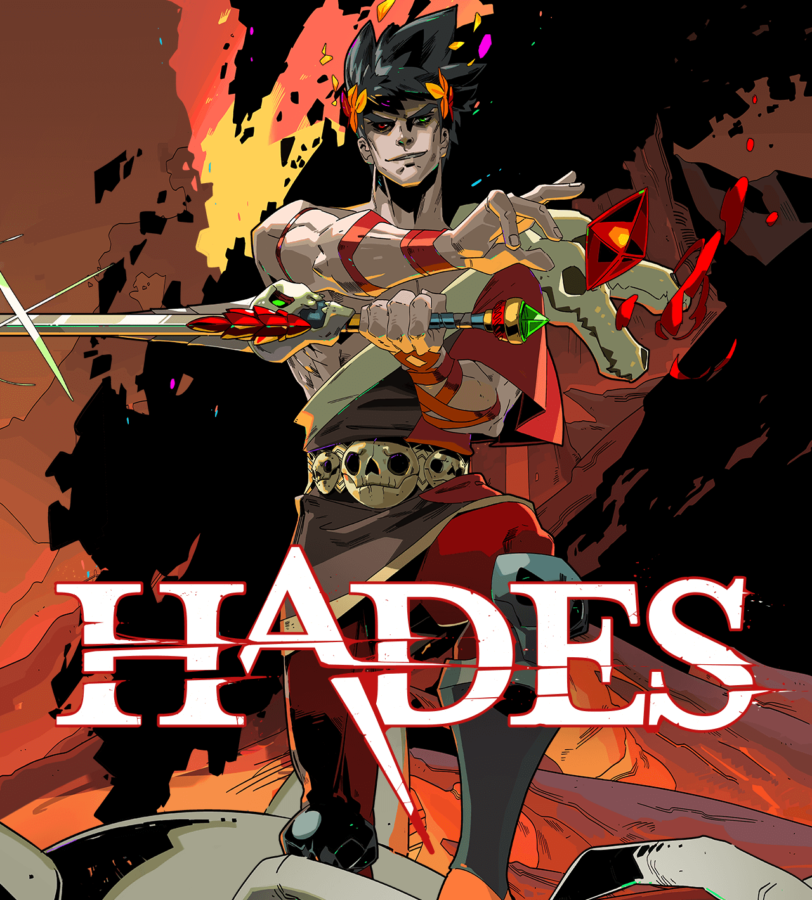

Что это за рогалики такие?
Невозможно подобрать точное определение этому термину, кроме его буквального значения («игра наподобие Rogue»). Можно сказать, что roguelike(рогалики) — это путешествия по рандомизированным подземельям почти без сюжета или с полным его отсутствием; игрок сражается и с самим подземельем, и с монстрами внутри, бесконечно повторяя этот процесс, чтобы освоить схемы, содержание и системы, определяющие природу игры, пока не умрёт и не начнёт заново.
Но кое-кто пытался сузить это определение. Можно взять для примера «факторы высокого значения» Берлинской интерпретации, которые были приняты на Международной конференции по разработке roguelike 2008 года (International Roguelike Development Conference 2008). (Да, ежегодно проводится конференция для разработчиков roguelike, а также ещё одна для игроков.)
Соглашение гласит, что в roguelike должна быть перманентная смерть (permadeath) — это значит, что когда персонаж умирает, то с ним покончено; перезагрузка невозможна. Также в игре должна присутствовать случайная/процедурная генерация уровней, пошаговое движение по сетке (которое обычно выполняется быстро), сложные взаимодействия между персонажем, объектами и миром, необходимость управления ограниченными ресурсами для выживания, чувство исследования и открытий при каждом прохождении — вы побеждаете благодаря навыкам и удаче, а не запоминанию. И игра должна быть сосредоточена на противостоянии игрока и окружений, то есть игрок в первую очередь должен убивать монстров (или убегать от них), а не заводить с ними дружбу.
Рождение первой игры
В 1980 году студенты Калифорнийского университета в Санта-Крузе Гленн Вичман и Майкл Той объединились для создания игры, которая бы рандомизировала схему лабиринта и расположение монстров/предметов в Colossal Cave Adventure. Они хотели, чтобы в их игре присутствовали также элементы D&D и популярной в 1970-х текстовой игры для мейнфреймов Star Trek, в которой игроки должны были уничтожить все боевые корабли Клингонов в галактике, прежде чем закончится время.
При помощи программной библиотеки Unix под названием curses, которая была своего рода инструментом для рисования в текстовом режиме, пара разработчиков создала приключение в подземном мире, в котором нужно было путешествовать с уровня на уровень, каждый из которых состоял из девяти или менее комнат, соединённых коридорами, в поисках Амулета Йендора. На самом деле, они не искали Амулет, он был всего лишь приманкой, наративной причиной спуска в опасное подземелье. При запуске новой игры уровни, свитки, оружие и расположение объектов рандомизировались. Предназначение предметов было неизвестно (если только у вас не находилось свитка идентификации), пока игрок не осмелится его использовать, рискуя нанести себе непреднамеренный урон.
Разработчики распространяли исполняемые версии своей игры Rogue по всем кампусам Калифорнийского университета. В ней было 26 типов монстров — по одному на каждую букву алфавита (заглавную), а персонаж игрока обозначался символом "@", который мог перемещаться не быстрее и не медленнее, чем монстры. Совершая любое из действий — перемещаясь в одном из направлений, читая свиток, ища ловушки или подбирая предмет — игрок тратил один ход.
Когда Той перевёлся в 1982 году в Беркли, они вместе с разработчиком curses Кеном Арнольдом внесли дополнительные улучшения, что сделало игру ещё более популярной. Настолько, что в 1984 году Rogue была официально добавлена в BSD Unix версии 4.2, из-за чего благодаря ARPANET игра попала на компьютеры университетов, исследовательских лабораторий и коммерческих компаний по всему миру.

Рождение игр rogue-like
Первой игрой похожей на Rogue была Hack. Изначально она (1980-82 годы) была попыткой воссоздания Rogue, по памяти, потому что создатель игры Джей Фенласон отчаянно стремился играть в Rogue, однако не имел к ней доступа. Но благодаря помощи его одногруппников Hack быстро эволюционировала из грубого клона Rogue в игру, вдохновлённую Rogue. Вероятно, это была первая игра жанра Rogue-like. В разговоре с автором Dungeon Hacks Дэвидом Крэддоком Фенласон сказал, что он пытался создать игру «столь же увлекательную, как и Rogue», и в то же время обладающую улучшенным ИИ монстров и дизайном уровней.
Два года спустя, в декабре 1984 года, голландский математик и программист по имени Андрес Броуэр нашёл эту кассету в архиве Centrum Wiskunde & Informatica (CWI). Заинтригованный, он начал играть. Вскоре Hack захватила его точно так же, как и Фенласона: не как игра, а как задача по программированию. За несколько последующих месяцев он опубликовал четыре новые версии, каждая из которых добавляла к оригиналу новые функции в соответствии с отзывами и предложениями коллег из CWI и фанатов игры в Usenet.
Он добавил новых монстров, в том числе и длинного червя, который разделялся на двух червей, если ударить его в любом месте между головой и хвостом, а также животных, которые могли сражаться вместе с игроками. А ещё он добавил печеньки с предсказаниями, пути, возвращающие к ранее посещённым уровням подземелья, лавки, классы персонажей (боец, рыцарь, пещерный человек, волшебник, турист и археолог — каждый из них имел свой стартовый инвентарь), возможность оставлять записи на полу и множество других функций. (Моё любимое дополнение: игрок мог поедать трупы, чтобы иметь шанс на получение таких возможностей, как невидимость или устойчивость к магии.) Потом Андрес утерял интерес и прекратил разработку.

Тем временем, без ведома Броуэра и множества игроков в Hack из Usenet, в Оклахоме набирала популярность другая игра, вдохновлённая Rogue. Её история была очень похожа на историю Hack. Студент и лаборант отделения вычислительных наук Оклахомского университета Роберт Коенеке создал по памяти собственную версию Rogue. Эта версия имела тематику «Властелина колец»: зловещий Балрог, Проклятье Дурина, стал в ней охранником сокровищ в глубочайших закоулках подземелья.
Роберт назвал игру Moria в честь огромных захваченных демонами шахт Мории Средиземья. Moria вдвое увеличила максимальную глубину подземелья, с 26 уровней до 50, и перенесла движение с клавиш H, J, K и L (которые были выбраны для Rogue, потому что перемещали курсор в текстовом редакторе vi) на алфавитно-цифровую клавиатуру. Кроме того, Moria избавилась от многих ограничений Rogue, например, от её сетки комнат размером 9x9 (они превратились в переплетающиеся и извивающиеся лабиринты, растянувшиеся на несколько экранов). Монстры двигались с различной скоростью, которая зависела не только от их класса, но и от уровня подземелья — чем глубже спускался игрок, тем выше была вероятность встретиться с быстрым чудовищем, которое разорвёт тебя, прежде чем ты успеешь сделать ход. Это добавило новый элемент тактики: если хочешь выжить, то нужно учитывать разницу скоростей.

Хотя Moria и Hack обычно называют источниками создания жанра roguelike, есть и другие простые roguelikes, выпущенные в этот период, которые я вкратце упомяну. Mission: Mainframe (1983-1987 годы) заменила фэнтезийный антураж Rogue научной фантастикой: вместо Амулета Йендора появился компьютерный мейнфрейм, а зловредный оператор которого превратился в охраняющего его главного босса. Монстрами стали офисные работники, оружием и предметами — офисные принадлежности, а в стычках можно было побеждать оружием, обменом, хитростью, телефонными звонками-розыгрышами, уклонением или «стратегией», приобретаемой в библиотеке вестибюля.
Advanced Rogue (1984-1986) по сути являлась Rogue с простыми лавками, другими монстрами и «разнообразными» магическими предметами и расширенной реализацией концепции проклятых предметов, дополненной благословениями, позволяющими зачаровать предмет или снять с него проклятие.
Лучшие рогалики
1. Risk of rain 2

Классическая сетевая rougelike-игра Risk of Rain возвращается, став глубже и сложнее. Бросьте вызов опасному миру в одиночку или объединитесь с четырьмя друзьями, чтобы уничтожить орды монстров, собрать артефакты и сбежать с враждебной планеты. С каждой попыткой вы будете все лучше узнавать повадки врагов и побеждать своим мастерством, даже когда перевес на их стороне. Благодаря уникальной системе подстройки сложности ваш герой и враги будут постоянно усиливаться, а тот, кто раньше был боссом, рано или поздно станет заурядным противником.
2. The Binding of Isaac

Название игры и её сюжет отсылают к известному библейскому сюжету с тем же названием: главный герой, ребёнок по имени Исаак, прячется в подвале дома от матери, которой «голос Бога» повелел убить сына. Управляя Исааком или другим из шести персонажей на выбор, игрок должен пройти через несколько уровней подвала, состоящих из множества процедурно генерируемых комнат и населенных враждебными существами. Внутри комнат игровой процесс оформлен в виде шутера — персонаж должен, «стреляя» собственными слезами, поразить врагов, одновременно избегая столкновений с ними. Смерть в The Binding of Isaac является необратимой — если персонаж потеряет все свое здоровье, игрок будет вынужден начать игру с самого начала. По словам Макмиллена, игра затрагивает такие темы, как жестокое отношение к детям, половая идентичность, детоубийство, пренебрежение, самоубийство, аборт, а также как религия может навредить ребёнку — темы, которых обычно стараются избегать
3. Dead cells

ходе Dead Cells игрок управляет существом, пытающемся выбраться из лабиринта. Уровни игры, выполненные в духе двухмерного платформера, генерируются процедурным образом; по ним разбросаны враги и различные сокровища, в том числе оружие со случайно генерируемыми характеристиками. Подобно играм в жанре roguelike, у персонажа Dead Cells только одна «жизнь» — если он погибнет, игрок будет вынужден начать игру с самого начала. Некоторые единожды полученные способности, открывающие доступ к новым, ранее недоступным областям игры, переносятся и в последующие прохождения. Концепция игры сильно менялась в ходе разработки: первоначально Dead Cells задумывалась как tower defense с обороной базы от полчищ зомби, но позже была полностью переработана под вдохновением от The Binding of Isaac. Dead Cells получила чрезвычайно высокие оценки критики — обозреватели отмечали привлекательную визуальную часть, сложный, но увлекательный игровой процесс и чрезвычайно высокое качество игры в целом.
4. Enter the Gungeon

Enter the Gungeon - это подземелье с перестрелками, которое следует за группой неудачников, которые стремятся стрелять, грабить, уклоняться и переворачиваться, чтобы добиться личного отпущения грехов, достигнув главного сокровища легендарного Gungeon: оружия, которое может убить прошлое. Выберите героя и проложите себе путь на дно Gungeon, преодолев сложную и развивающуюся серию этажей, заполненных опасно очаровательными Gundead и грозными боссами Gungeon, вооруженными до зубов. Собирайте драгоценную добычу, открывайте скрытые секреты и общайтесь с предприимчивыми торговцами и владельцами магазинов, чтобы покупать мощные предметы, чтобы получить преимущество и убить свое прошлое
5. Hades
Сюжет игры основана на древнегреческой мифологии: главный герой Загрей, сын Аида, пытается сбежать из подземного царства мёртвых и добраться до горы Олимп; на этом пути ему помогают боги-олимпийцы, посылающие Загрею те или иные дары. В каждом прохождении игрок должен преодолеть серию собранных случайным образом комнат с врагами и наградами; в случае смерти Загрей возвращается в самое начало пути, хотя игрок может потратить собранные за время прохождения сокровища и на улучшение характеристик или разблокировку новых видов оружия. Многочисленные прохождения Hades связываются воедино разнообразными сценами и диалогами, раскрывающими предысторию игры и отношения её персонажей.
.jpg)